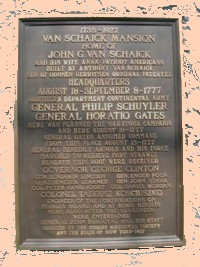

by
Stefan Bielinski
Johannes Gerritse Van Schaick was born in October 1748. He was the eldest surviving son of Albany businessman Wessel and Maria Gerritse Van Schaick. His middle name commemorates his mother's family.
In August 1775, he was almost twenty-seven when he married Anna Van Schaick. By 1796, six of their children had been baptized in the Albany Dutch church where he was a member who sometimes supplied wine for church services.
Raised in his father's Market Street store, his first ward house and property (probably on State Street) were valued substantially on the assessment roll in 1779. By that time, he was raising a family and had served as a firemaster. Aside from contributing a barrel of flour in 1775, his name appears to be absent from the rolls of community-based wartime activities. However, he was reputed to be a financier of the American army!
In 1782, he was named as a contingent beneficiary in the will of his father. However, that document also held him to a debt of almost a thousand pounds and set up conditions for its repayment. His bachelor younger brother and later business associate, Gerrit W. Van Schaick, may have lived with them for a time and later became a prominent Albany bank officer and property holder. In 1790, this Albany merchant was the head of the first ward household. 
The Van Schaick brothers proved to be sharp businessmen as they were among the creditors who hounded William Duer into debtor's prison in 1793.
Within a decade, he relocated to a home at 5 North Pearl Street while maintaining the landmark Market Street store.
After 1813, he seems to have left the city. Johannes G. Van Schaick died on Van Schaick Island in 1828.
notes
 Sources: The life of Johannes G. Van Schaick is CAP biography number 3963. This profile is derived chiefly from family and community-based resources.
Sources: The life of Johannes G. Van Schaick is CAP biography number 3963. This profile is derived chiefly from family and community-based resources.
first posted: 11/15/03; revised 5/7/08